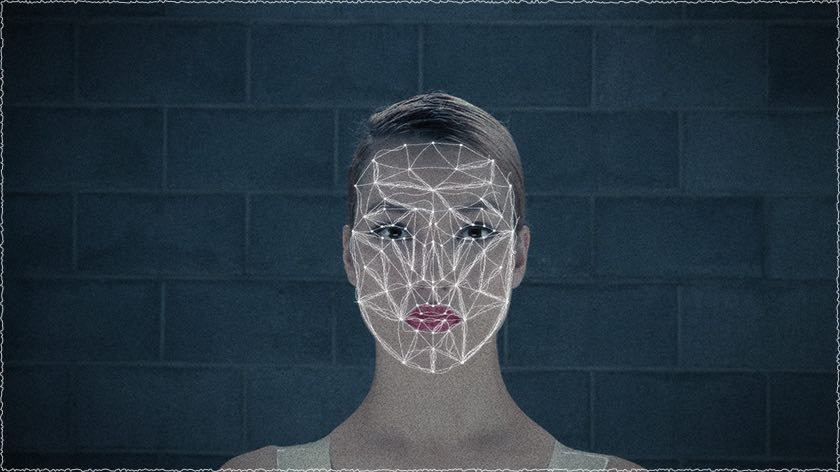

- Home
- About
- How to play
- Share :


- © KAMRA2015

下記のような写真をアップロードしてください。

この顔で再生します。よろしいですか？
Error
顔が認識できませんでした。


理屈や理論ではない感覚に身を任せた音楽スタイルで、自分の世界を作り上げる。ファミコン世代に生まれ育ったために培ったメロディ感と、エレクトロニカに大きく影響を受けたリズム、2つが大きな基礎となっており、さらに2001年より、音楽制作チームinvisible designs lab.の立ち上げメンバーとなり、多くのCM音楽、ゲームサウンドトラック、サウンドロゴ等の数々の音楽制作の携わり、新たな感覚を取り入れ続ける。
invisi-dir.
音楽クリエイティブチーム、インビジブル・デザインズ・ラボが考える、"DIRECTION"つまりクリエイティブの「方向」です。みなさんと新しい価値の共有をテーマにした"インビジブル・デザインズ・ラボ セレクション"として、音楽を軸に多くの新しい価値の提案をするプロデュースとセレクションを行って行く予定です。
http://invisi-dir.cominvisible designs lab.
大切な事は見えない。見えないものには大きな価値があります。アイデアやイマジネーション、インスピレーション。それらを見える形や新しい発想で表現していく音楽を軸としたクリエイターチームです。
http://invisi.jpWebカメラでの体験方法

トップページで「Webcam」を選択

カメラの使用を許可
撮影準備
- メガネ、帽子を取って顔の全体がはっきり見えるようにしてください。
- ガイドに合わせて顔を固定してください。
- 髪の毛が顔にかからないよう、顔を明るく照らしてください。

ガイド表示に顔をあわせる

顔が認識されると Deja vu 開始
写真アップロードでの体験方法

トップページで「Photo」を選択

写真アップロード準備
下記のような写真をアップロードしてください。
- メガネ、帽子は被らず顔の全体がはっきり見える写真
- 正面を向き、顔がまっすぐ固定された写真
- 髪の毛が顔にかかっていない、顔が明るく照らされた写真

写真ファイルをドラッグ＆ドロップするか、クリックで選択しアップロード

顔認証位置を確認し、「OK」で Deja vu 開始
画像アップロードに関する免責事項
KAMRA Deja vu（以下、「当サイト」）は、Invisible Design Lab（以下、「当社」）が企画運営するプロモーションサイトです。当サイトを利用される方（以下、「利用者」）は、当サイトから写真をアップロード、又はwebカメラを用いて撮影して頂いた時点で、この免責事項に同意されたものとして扱わせていただきます。 webカメラを用いて撮影された画像、アップロード画像および生成画像にかかる著作権・肖像権（パブリシティ権を含み、以下「肖像権等」といいます）は、利用者に帰属するものとします。また、当サイトを利用した事により作られる生成動画の著作権は当社および当社が使用をみとめた権利者に帰属します。 利用者は、当社によるwebカメラを用いて撮影された画像、アップロード画像および生成画像の複製、翻案、公衆送信、出版、上演、展示、貸与、二次的著作物の創作およびその利用について無償で利用許諾するものとし、利用者は肖像権等および著作者人格権を行使しないものとします。 当社は、webカメラを用いて撮影された画像、アップロード画像、生成画像および生成動画をテレビ、ラジオ、インターネット、看板、掲示、ポスター、新聞、雑誌、書籍、パンフレット類など、当社が本サイトの広告宣伝等のために必要と判断する利用目的において、期間、地域、回数、利用方法の制限なく、利用できるものとします。 利用者以外の第三者が著作権その他の権利を有する画像、利用者以外の第三者の肖像を含む画像、利用者以外の第三者が著作権その他の権利を有する素材を含む画像、作成・投稿または公開が、利用者以外の第三者の著作権、肖像権等その他の権利を害する画像をアップロードすることはできません。webカメラを用いて撮影する場合も同様に、利用者以外の第三者が著作権その他の権利を有する画像やフィギュア、人形などの立体物、利用者以外の第三者の肖像を含む画像、フィギュア、人形などの立体物、利用者以外の第三者が著作権その他の権利を有する素材を含む画像、フィギュア、人形などの立体物、作成・投稿または公開が、利用者以外の第三者の著作権、肖像権等その他の権利を害する画像、フィギュア、人形などの立体物をwebカメラを用いて撮影することはできません。 当サイトから投稿された画像、webカメラを用いて撮影された画像および、内容は利用者の自己責任の下で利用されたものとします。利用者は、当サイトを利用して行われた一切の行為お よびその結果について一切の責任を負うものとします。ただし、当社が必要と判断した場合、当サイト内のデータを削除する権利を保有します。 著作権に違反する写真を使用しないこと。他人のプライバシーを侵害する投稿、撮影を行わないこと。他人の気分を害する投稿、撮影を行わないこと。その他、違法、脅迫的、中傷的、侮辱的、わいせつ、下品、扇動的、性的、犯罪行為を助長し、民事責任を生じさせ、法律に違反する投稿、撮影を行わないこと。当社は、これらに該当する責任を負うものではありません。